Turn your phone into a wireless microphone.
Speak into your phone and a whole group hears you — on a Bluetooth speaker, in any browser, or on their own headphones over a hotspot you create. No Wi-Fi, no account, no gear.
No sign-up · works with no Wi-Fi — make your own hotspot · 25+ languages
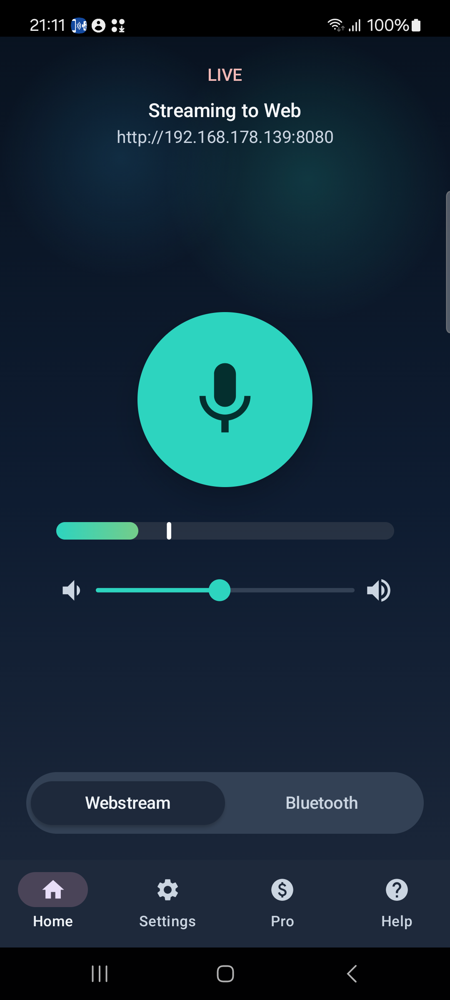
Your voice, where people need it
No studio mic, no PA rental, no cables. Just your phone — and a network only if you want one.
Straight to your speaker or headset
Pair a Bluetooth speaker, soundbar or headset and route your voice to it — a handheld mic into any portable PA.
Share one link, the whole room listens
RemoteMic shows a link. Anyone on the same Wi-Fi opens it in a browser to listen — many listeners at once, nothing to install.
A private hotspot, fully offline
RemoteMic turns this phone into a private hotspot. Listeners scan one QR to join, a second to open the stream — no router needed. Perfect outdoors or on the move.
Fast, clear, and ready to run
Ready in seconds
Open it, tap once, you're live. No account, no setup, no extra gear.
Long sessions
Stream a whole class, talk or rehearsal — and it keeps running with the screen off.
Feedback-safe audio
Real-time gain plus four voice profiles keep speech clear. Listeners on their own headphones means no feedback squeal — clear for everyone.
Private by design
Streams stay on your network. No cloud upload, no account. Add a password for shared sessions (Pro).
Tablet ready
A two-pane layout adapts to tablets and landscape — handy propped up at a podium or event.
25+ languages
The interface is translated, so it feels native wherever you are.
Whenever you need to be heard
Tour guide
Lead an outdoor group on their own headphones — no Wi-Fi, no shouting.
Classroom
Reach every seat without raising your voice.
Assistive listening
Every word right in their ears, at their own volume.
Meetings & talks
A mic for the room, instantly.
Small events
Announcements without renting a PA.
Bluetooth speaker
Turn any portable speaker into your PA.
Real moments, real rooms
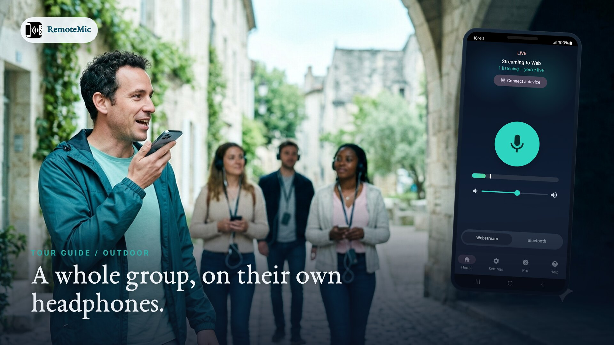
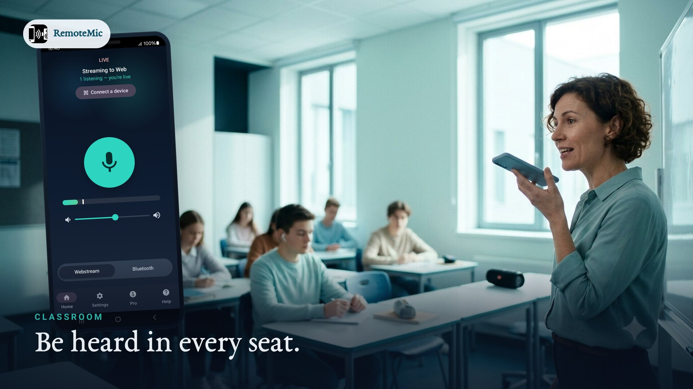
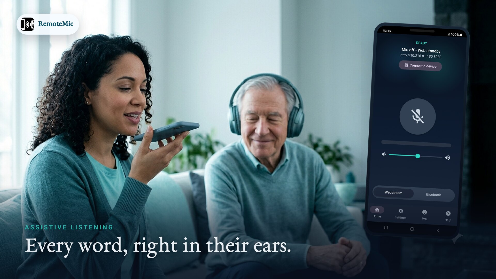
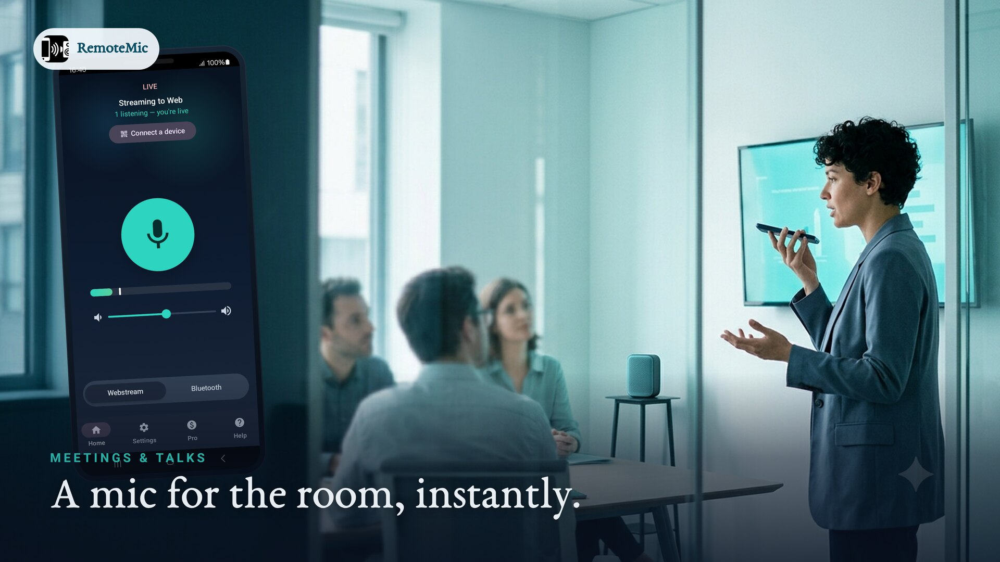
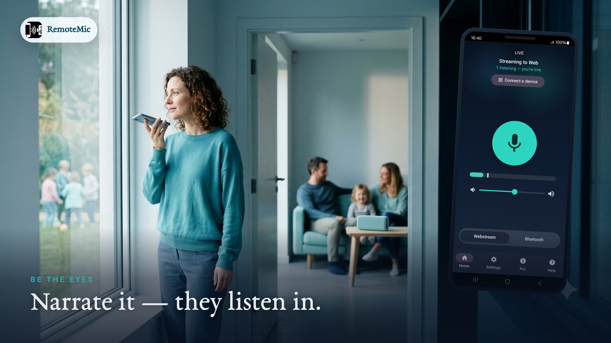
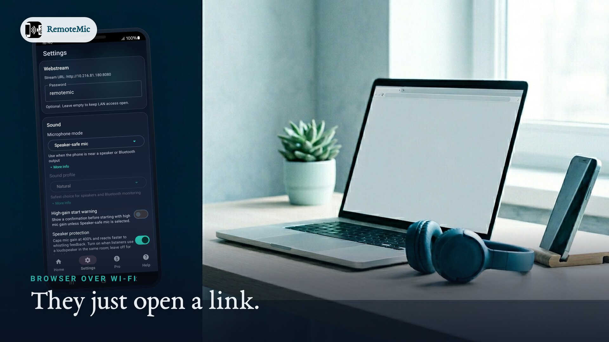
How RemoteMic works
Tap to start your mic
Open RemoteMic and start capture. No account, no setup.
Pick where it plays
A paired Bluetooth speaker, a link for any browser on your Wi-Fi, or your own hotspot when there's no network.
Speak — they hear you
Your voice plays live. Capture starts and stops on the phone, so you stay in control.
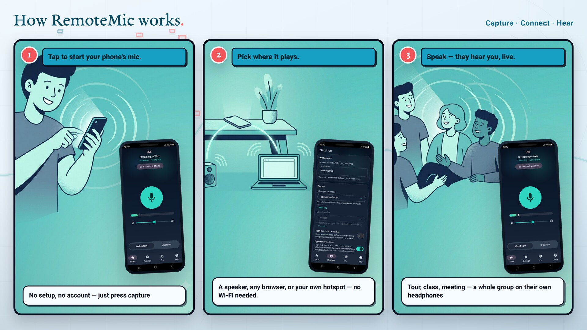
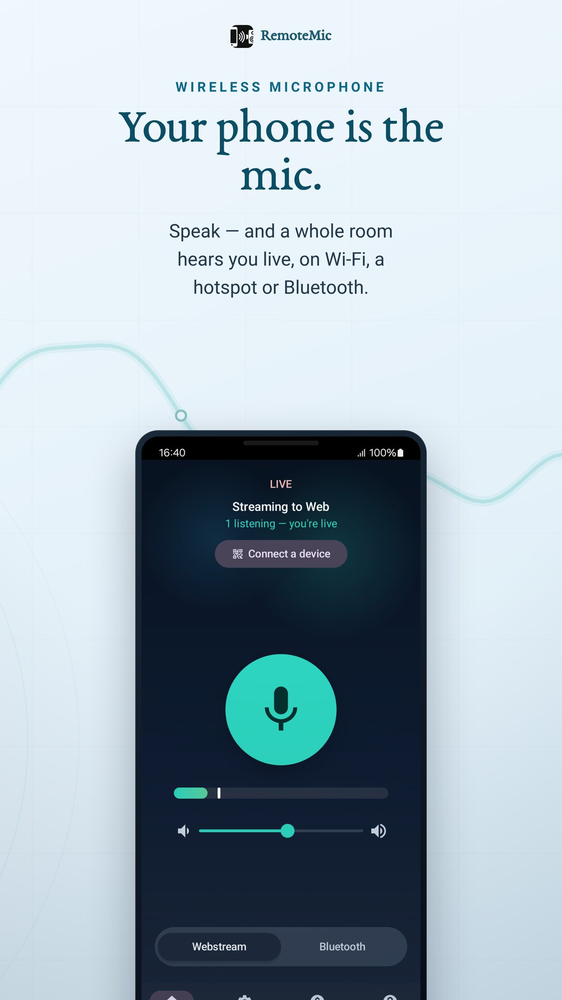
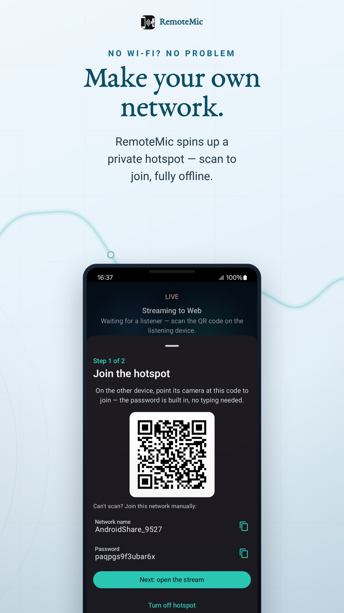
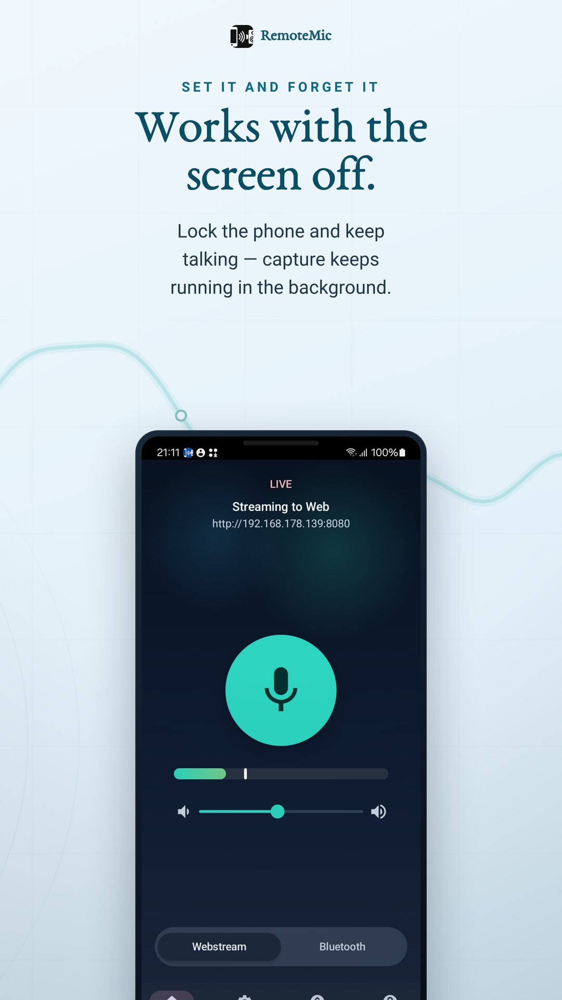
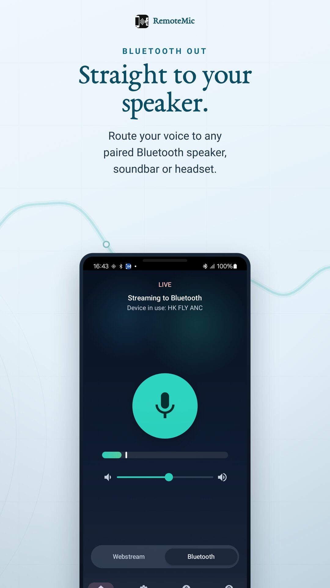
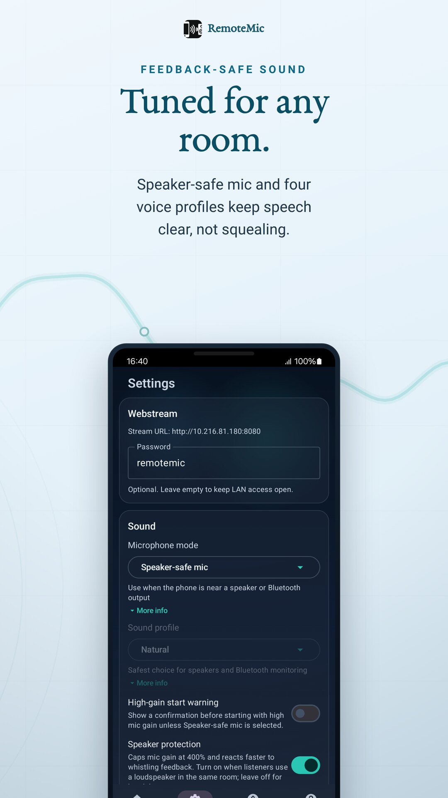
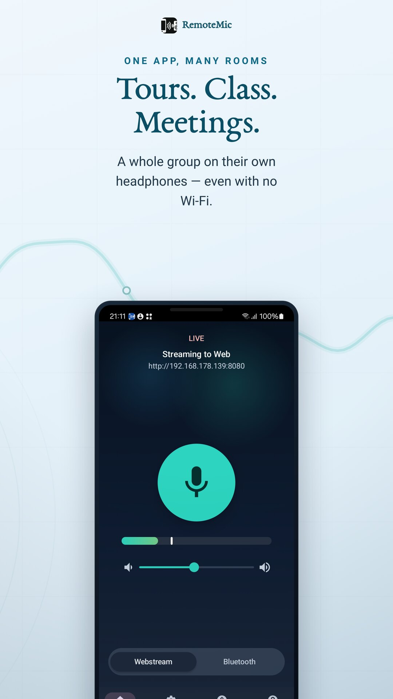
Simple pricing
Use RemoteMic free every day. Go Pro when you need more.
Free
Everything you need to be heard around the house or the classroom.
- Bluetooth & browser streaming
- Gain control & voice profiles
- Generous daily capture time
- No account required
Pro
For long sessions and shared networks. Day, week, month, year — or a one-time lifetime unlock.
- Unlimited capture & listening time
- Full microphone gain range
- Password protection for shared sessions
- All future Pro features
Frequently asked questions
Can I use my phone as a microphone for a Bluetooth speaker?
Yes. Pair your Bluetooth speaker or headset, choose Bluetooth output in RemoteMic, and your voice plays through the speaker in real time.
Does RemoteMic need an internet connection?
No. Core streaming runs on your local Wi-Fi/LAN. Listeners open a link in a browser on the same network — no account and no cloud upload.
How many people can listen at once?
One phone can stream to many browser listeners on the same network at the same time. They just open the link you share.
What if there's no Wi-Fi?
RemoteMic can turn your phone into a private hotspot. Listeners scan one QR code to join the network and a second to open the stream — no router, fully offline. Ideal for tour guides and outdoor groups.
Can a whole group listen on their own headphones?
Yes. Share the link or join your hotspot and everyone listens on their own phone and headphones. Because each person is on personal earbuds rather than an open speaker, there's no feedback squeal — clear for every listener.
Can I use it with a loudspeaker or portable PA?
Yes. Pair a Bluetooth speaker or feed a portable PA and RemoteMic becomes a handheld mic for the room. Keep the speaker a step or two away from the phone and at a sensible volume — like any PA, a speaker placed right next to the mic can ring. For a hands-off, feedback-free setup, have listeners use their own headphones instead.
Is RemoteMic free?
Yes, RemoteMic is free with a generous daily capture allowance. Pro removes the time limit, unlocks the full gain range, and adds password protection.
Does it keep working with the screen off?
Yes. A foreground service keeps the microphone capturing and streaming reliably while the screen is off.